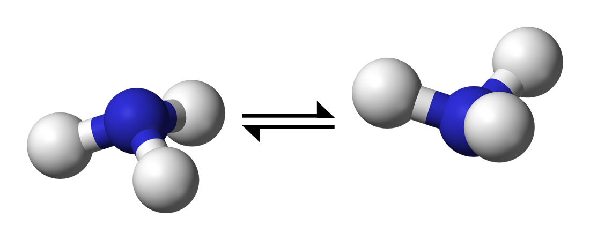
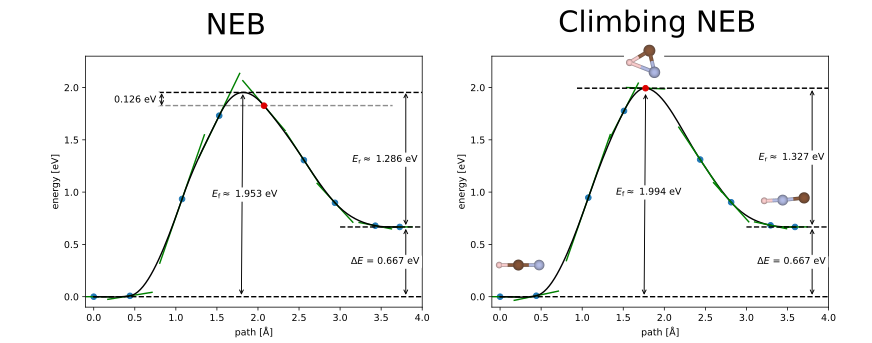
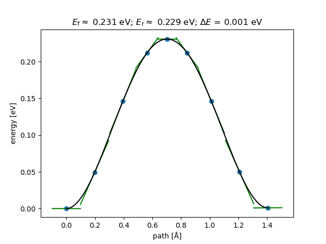
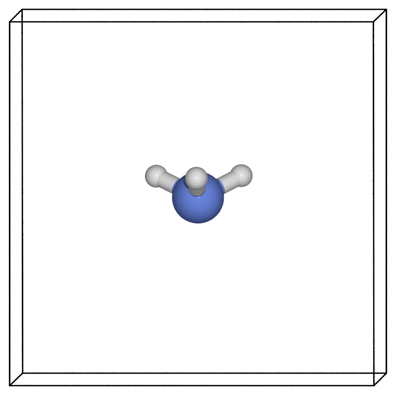

微扰弹性带法教程
概述与背景
微扰弹性带法（NEB）是一种广泛用于寻找原子两种构型之间最低能量路径的方法。你可以使用该方法来估算系统从一种结构过渡到另一种结构所需的能垒。
该技术从两个固定的端点开始，这两个端点均为完全松弛（局部）极小值状态：初始构型和最终构型。然后通过虚拟弹簧将这些端点连接起来，这些虚拟弹簧“拉紧”结构，使其经过一个或多个中间过渡态。
在本教程中，我们将使用一个广为人知的例子——氨分子的 金字塔反演

我们将涵盖：
- 如何设置初始结构、最终（以及中间）结构
- 如何高效地运行NEB计算
- 如何分析结果
- 其他技巧和提示
文件
您可以在以下位置找到本教程所需的所有文件： neb_tutorial.tar.gz
设置结构
设置初始态和最终态
这些是你想要寻找势垒之间的局部极小结构。它们可以是等效结构，例如通过一个对称操作（如镜面反射）得到的结构，也可以是具有不同能量的构型（在这种情况下，你的正向和反向势垒将不相等！）。必须满足两个关键条件 在运行NEB计算之前:
- 在开始NEB计算之前，终点结构必须完全松弛（几何优化）。请注意，初始松弛和实际的NEB计算都必须使用一致的参数（例如基组、赝势、k点、交换关联泛函等）。
- 原子必须处于正确的顺序。一个常见的错误是使用软件工具从初始状态生成最终状态，结果导致原子顺序与初始状态不匹配。当CASTEP在两个结构之间进行插值时，原子会“互相穿过”，从而导致计算崩溃。务必确保原子连接方式符合预期。需要注意的是，对于CASTEP而言，同一元素内原子的顺序才是关键，而不同元素之间的顺序并不重要。在此示例中，我们确保初始、最终和中间结构中的氢（H）原子顺序一致，并且可以将氮（N）坐标置于氢（H）坐标之前或之后。
初始状态的指定方式与正常的.cell 文件相同，例如：
%BLOCK positions_frac
H 0.500011764912384 0.634846485697942 0.443086003907125
H 0.616593728396204 0.432553816946042 0.442828605918639
H 0.383248448613152 0.432623959245757 0.443068863520867
N 0.500000000000000 0.500000000000000 0.500000000000000
%ENDBLOCK positions_frac
最终状态是使用相同.cell文件中的一个类似块来指定的，但 _product 附加在块名称之后，例如：
%BLOCK positions_frac_product
H 0.500154169007758 0.634858887961251 0.556834437330747
H 0.616661280589956 0.432482046338754 0.556941161085851
H 0.383366127862304 0.432719065607707 0.557277918851780
N 0.500000000000000 0.500000000000000 0.500000000000000
%ENDBLOCK positions_frac_product
设置过渡态的初始猜测
CASTEP 要求你提供 一个 在初始和最终构型之间引入一个中间结构，以确保NEB沿着正确的路径进行。中间构型可通过如下方式添加：
%BLOCK POSITIONS_ABS_INTERMEDIATE
ang
N 3.500000 3.500000 3.500000
H 3.500000 4.443968 3.500000
H 4.316393 3.027626 3.500000
H 2.683149 3.028701 3.501215
%ENDBLOCK POSITIONS_ABS_INTERMEDIATE
CASTEP 将根据你所选择的图像数量，从初始结构到中间结构、再从中间结构到最终结构进行线性插值，以生成路径的其余部分。
在许多情况下，一个合适的过渡态初始结构仅仅是初始结构和最终结构之间的中点（即坐标之间的线性插值）。然而，如果您的最低能量路径包含例如围绕键旋转一组原子之类的情况，则初始与最终构型之间的线性路径可能是一个糟糕的起点/非物理结构。例如，如果终点对应于C2旋转，则通过线性插值得到的中间结构将不是一个物理存在的结构。在运行计算之前，重要的是要对所有结构进行可视化或其它方式的检查。
中间结构也可以被选择以使结果偏向某一路径而非另一路径。
我需要多少个图像？
这取决于……通常最好从少量图像开始，如果需要再增加数量。从小处开始可以快速了解能量景观，而这将决定实际所需的图像数量。
此外，如果你开始时使用过多的图像，可能会因为优化耗时过长而永远无法接近收敛的过渡态。相反，如果你先从较少的图像开始，并获得一个合理的过渡态结构，然后可以将其作为初始中间结构，进行包含更多图像的续算。
使用较多（即大于15）的图像会导致收敛缓慢，但可能会为复杂势垒获得更准确的最低能量路径。然而，如果你发现路径特别复杂，或许将工作分成多个NEB计算会更好，每个计算使用较少的图像。请始终确保完全松弛端点（即使端点是一个亚稳态局部最小值）！
使用过少（即小于5）可能会在能量景观复杂的情况下无法找到最低能量路径。
你指定的 .cell 文件中的过渡态（TS）猜测结构将被分配给中间图像，其余图像则在初始结构、TS 猜测结构和最终结构之间进行线性插值。如果你选择偶数个图像，则“中间”图像被定义为中心右侧的那个图像。例如，对于 6 个图像，TS 猜测结构将被分配给第 4 个图像。这会使你的初始NEB（过渡态路径）呈现不对称性，即TS猜测结构左侧的图像数量多于右侧。如果TS猜测被认为位于最小能量路径的几何中心位置，则最好使用奇数个图像。
由于本例中的最低能量路径非常简单，我们实际上只需一个图像即可。然而，这里我们将使用7个图像来说明该过程。作为练习，你可以尝试运行相同的计算并 tssearch_max_path_points: 1、2、3、4、5 张图像，并注意结果如何变化。
一些问题，有助于回答你需要多少图像：
- 初始态和最终态之间的景观有多复杂？例如，如果你预计在终点之间存在多个极大值，那么你可能需要比这里所讨论的单峰例子更多的图像。
说明
图像的数量是结构的数量 之间 终点。路径中的结构总数（即包括终点）为图像数量加2。
约束条件
我们通常可以通过对原子位置施加约束来显著提高过渡态搜索的效率，尽管必须谨慎操作，以免引入伪影。例如，在研究吸附物种在表面层上的NEB势垒时，我们可以合理地对底层 slab 层施加约束，但可能希望顶层（或顶层）层保持无约束。
在氨的情况中，我们可以通过添加以下块来约束氮原子的位置，而不会影响物理设置：
到 nh3.cell 文件。
你应该会看到类似如下内容：
在 .castep 输出文件。
我需要走攀爬NEB吗？
爬升NEB方法会修改最高能量图像所受的力，使其试图向上攀爬 向上 势垒。这非常有用，可以准确估算过渡态构型和势垒，因为你可以确保其中一个图像恰好位于最低能量路径的鞍点上。然而，在探索更复杂的路径（即包含多个极大值的路径）时必须谨慎对待，因为可能会变得模糊不清，不确定应选择哪一个图像作为“爬升”的对象。
在我们的例子中，路径相当直接，无论我们使用爬坡NEB方法还是常规NEB方法，其结果差异都不会很大。我们可以设置：
TSSEARCH_NEB_CLIMBING: TRUE
在.param 文件中。尽管在这种情况下并非必要，但我们在这里使用它以说明该过程。
为了说明爬升NEB方法更为重要的一个案例，我们简要再举一个例子：HCN到HNC的异构化过程。在此情况下，最低能量路径并非初始态和最终态之间的简单线性插值，且该最低能量路径不具备对称性。爬升NEB方法对于准确估算能垒和过渡态结构至关重要。如图1所示，我们使用7个图像比较了常规NEB与爬升NEB方法。虽然在采用合适的插值方案时，两种方法可以得到相似的能垒高度，但常规NEB无法找到正确的过渡态结构；相比之下，爬升NEB能够准确找到正确的过渡态结构和能垒高度。

说明
CASTEP 中的爬升图像法需要总图像数为奇数。因此，如果你在你的计算中选择偶数个图像，则会存在问题。 .param 文件，CASTEP 将自动添加一个额外的像。
运行NEB
并行化
因为NEB计算本质上涉及 N 独立的 CASTEP 计算（其中 N （图像数量），我们可以非常高效地利用高性能计算机。这是通过“任务农场”方式实现的，即运行计算任务以 N 图像独立运行。例如，如果一个 CASTEP 计算可以分配在一个节点上，而你有 7 个图像，则可以通过设置关键字：在总共 7 个节点上运行。
NUM_FARMS: 7
在 .param 文件中。
一个不错的经验法则是要力求 NUM_FARMS = NEB 图像的数量。这样，每个“农场”将负责一个 NEB 图像。由于每个“农场”实际上将在其负责的每个 NEB 图像上运行一系列单点计算，因此该“农场”的计算资源应适当配置以满足此类计算的需求。如果资源过小，可能会出现内存不足错误；如果资源过大，则可能导致过度并行化，从而降低整体性能。即，你应该将总计算资源设置为 NUM_FARMS 核心数量是单个结构单点计算所用核心数量的若干倍。
这也假设你的可用计算资源可以被整齐地划分为 NUM_FARMS简单的情况是当每个农场都可以在单个节点上运行；即 NUM_FARMS = NEB 图像数量 = 节点数量。请注意，可用的核心总数必须能被 NUM_FARMS.
如果你选择 NUM_FARMS < 图像数量，每个图像将依次在一台农场上运行，一旦该农场变得可用。如果图像数量不是倍数的 NUM_FARMS，一些农场将比其他农场承担更多的图像处理任务，导致整体效率低下。
如果你选择 NUM_FARMS > 图像数量，然后一些农场将没有任何工作可做，导致整体效率低下。
设置 NUM_FARMS = 1 等价于不设置 NUM_FARMS.
你会注意到，如果你启用了任务农场功能，seedname.castep 输出文件看起来会相对空旷，因为大部分输出被分割到了不同的任务农场 .castep 文件中。第一个索引的文件包含最重要的信息（例如，“最大NEB力”），并会被命名为例如 seedname_farm001.castep.
计算正在收敛吗？
你可以通过在.castep输出文件中搜索“最大NEB力”来监控收敛情况。
常见的收敛问题包括：
- 初始结构和最终结构中原子顺序不一致，即初始路径非物理。这是导致计算失败的常见原因之一。始终需要可视化初始和最终结构，并确保原子连接方式符合预期。
- 图像数量过多（或过少）。图像数量过多可能导致收敛缓慢，图像数量过少则可能导致计算无法找到最低能量路径。
- 初始或最终状态（端点）未完全弛豫的结构
续算 / 继续
有时计算会在NEB计算完成之前耗尽时间/迭代次数。在这种情况下，您可能会在.castep输出文件中看到“未收敛”消息；请务必仔细阅读您的输出文件！
如果你不作任何更改地重新运行计算，它将再次从头开始——这可能并不是你想要的结果！
为了从上次检查点状态重新开始NEB计算，你需要 明确地 在你的.param文件中设置你希望从中继续运行的.check文件名称。在我们的例子中就是：
在.castep输出文件中你将会看到： Coordinates of NEB images loaded from checkpoint file.
注意
与其他 CASTEP 任务不同，设置 continuation: default 似乎无法用于继续/重启NEB计算！您必须明确指定检查点文件的名称。
分析
一旦你得到了一个收敛的NEB，所提供的Python工具 readTS 可以用来解析和分析NEB。要将readTS模块添加到PYTHONPATH中，可以在其中找到一个setup.py脚本 castep/Utilities/readts 您 CASTEP 源代码目录的目录。运行 python setup.py 你应该将该模块安装到你的路径中。你也可以通过在你的 ~/.bashrc 或等效文件中手动添加以下行，并重新启动终端来实现：
（改变的） /path/to/castep/ 位到你机器上 CASTEP 所在的位置）。
然后你可以使用如下 Python 代码提取 NEB 路径：
## get this by adding castep/Utilities/readts to your PYTHONPATH
from readts import TSFile
from ase.neb import NEBTools
def get_images(tsfile):
'''
Function to extract the
final NEB images from a tsfile object
Args:
tsfile (TSFile): tsfile object
Returns:
images (list): list of ASE atoms objects
'''
diam_tst = tsfile.blocks['TST']
diam_i = tsfile.blocks['REA'][1][0]
diam_f = tsfile.blocks['PRO'][1][0]
nbeads = len(diam_tst[1])
max_idx = diam_tst.last_index
images = [diam_i.atoms]
images += [diam_tst[max_idx][i].atoms for i in range(0, nbeads, 1)]
images.append(diam_f.atoms)
return images
def plot_band(images, filename='neb.png'):
nt = NEBTools(images)
energies = nt.get_barrier()
print(f'Barrier height: {energies[0]:16.5f} eV')
print(f'E_final - E_initial: {energies[1]:16.5f} eV')
nebplot = nt.plot_band()
nebplot.savefig(filename)
if __name__ == '__main__':
import sys
seedname = sys.argv[1]
path = './'
tolerant = False
if len(sys.argv) > 2:
tolerant = bool(sys.argv[2])
tsfile = TSFile(seedname, path=path, tolerant=tolerant)
images = get_images(tsfile)
plot_band(images)
# we can use ASE to write out the structure
# in whatever format we want
print('Image\t\t Energy (eV)')
for i,atoms in enumerate(images):
print(f'{i:03d}\t {atoms.get_potential_energy():16.5f} eV')
## this format includes the energy of the image
atoms.write(f'image-{i:03d}.xyz')
## We can also use the ASE GUI to
## view the images and analyse the NEB path.
## Select Tools -> NEB Plot
# from ase.visualize import view
# view(images)
如果我们把此脚本保存为 analysis.py，并在包含 nh3.cell 和 nh3.ts 文件的目录中运行它，如下所示：
我们将为优化后的NEB路径中的每个结构获得一个.xyz文件以及每个图像的能量。我们还将得到势垒估计值和一张显示势垒的NEB图。
ASE GUI 也可以用于绘制 NEB 带（在上述脚本的最后两行取消注释，并从 GUI 中选择 工具 → NEB 图）。
ASE生成的图表看起来如下：

绿色线条显示了这些点处的切线；这些切线可以作为收敛性的指示标志。
我们得到的能垒约为0.23 eV，与0.25 eV（24.2 kJ/mol）的值相当。 来自维基百科.
我们还可能注意到路径两端点之间的能量微小差异（约1 meV）。这两个端点的能量本应相同，因此这种差异可作为几何结构优化中数值噪声的一个粗略估计。如果发现等效结构（本例中的两端点）具有显著不同的能量，则需要返回并收紧初始几何结构优化的收敛标准或力/能量容差，并使用这些更严格的参数重新运行NEB计算。
使用我们最喜欢的可视化软件（此处我们使用了 ASE POV-Ray 接口)，然后我们可以考察结构沿着NEB找到的最低能量路径如何演化。

零点能修正
All of the above calculations were done while treating the nuclei as classical particles. In many cases, particularly when lighter atoms are involved, the energy barrier estimates would need to be corrected for quantum-nuclear effects.
The simplest approach to accounting for the true quantum nature of nuclei is to compute the vibrational frequencies of the nuclei within the harmonic approximation. You need would need to do this for the reactant and transition state configurations and use, for example, equation 2 from [J. Chem. Phys. 124, 044706 (2006)](http://theory.cm.utexas.edu/henkelman/pubs/henkelman06_044706.pdf) to obtain the Harmonic quantum correction to the barrier.